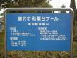
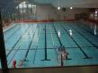

かめ遊泳クラブ
活動場所予定
秋葉台公園
〒252-0816
藤沢市遠藤2000-1
電話: 88-1811
地図
開館: 9:00
利用時間: 9:30-20:00
最終入場時間: 19:30
利用料金: 400/1回
休館日:
月曜日
休日の翌日(日曜日は除く)
年末年始(12/28-1/4)
帽子着用。
1時間毎に10分の休憩時間がある。
2000年 1/14-2/14 は改装工事で休館。
- 普通の大きさのロッカーしか無い。
靴と一緒に入れなきゃならないので荷物は小さめに。
一個100円。お金は戻って来る。
- 帽子は 500円〜1000円で売ってる。
- 水中メガネはあった方が良かった。久々なので目が痛い。
- 鯖はいなかった。
- 防水でも時計着用不可。
- 無料で one point advice してくれる。
- 冬期は全体的にいついっても空いてる。
- 日曜日はガラガラ。
- 平日の昼に比べて夜の方が混む。
- 夏期はこれの逆。


sakane@kame.net
$Id: index.html,v 1.2 2004/07/05 09:10:21 sumikawa Exp $